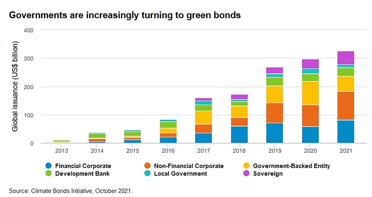

Countries globally have been affected by the rapid change in climate and global warming. Melting of ice in Himalayas and the poles, unnatural drought, and rains, rise of sea levels threatening the coastal areas are some of the major impacts of climate change. This rapid change in climate can affect the poorest the most. Poors are the ones with the fewest resources, and they can’t adapt quickly to the climate change and escaping from poverty becomes much more difficult. The effects of climate change can reduce the global economic output by 11 to 14 percent by 2050 which amounts to reduction of $23 trillion annual global economic output (Swiss Re Institute, 2021). Researchers of UCL in 2021 concluded that by 2100, the global GDP could be lower by 37% than it would be without the rapid climate change. So, with the growing impacts of climate change in economy, ecology and human lives, there is growing pressure for leaders globally to unite and act to curb the climate change.
In this context, there is new type of financial instrument developed called the green bond. Green bonds are the bonds to raise capital for new and existing projects with environmental benefits. International Capital Market Association (ICMA) has defined green bond as a type of bond which signifies a commitment to exclusively use the funds raised to finance or refinance “green” projects, assets or business activities. This article will be focused on why should Nepal issue green bonds and what are the potential challenges Nepal could face in the issuance of green bond.
How could Nepal benefit from the green bonds?
Nepal’s share in global carbon footprint is negligible compared to industrialized countries. Yet, Nepal’s vulnerability due to climate change is very high. According to Global Climate Risk Index 2021, Nepal was ranked 12 among the countries most affected by climate change with 27% losses per unit GDP due to climate change (Eckstein, Kunzel, & Schafer, 2021). The cost of climate change is growing, and it is very burdensome for poor countries like Nepal which are still trying to get out of poverty. With 17.4 % of Nepalese multidimensionally poor, it is economically challenging for the country to invest in bring poverty reduction programmes because of growing impacts of climate change. This can impact Nepal’s SDG goals target.
• Nepal as a developing country has a long way to go to transform into a developed country. But with the growing concerns regarding sustainable development, there is strong pressure for the government to focus on green and sustainable projects. In this regard the green bond will help to finance the green projects without compromising the needs of Nepalese. It would help to reduce the economic costs due to climate change. UNDP’s study concluded that every dollar spent in reducing vulnerability to disasters saves around seven dollars in economic losses.
• UNDP’s roadmap 2016-2030 for “Sustainable Development Goals” estimated that Nepal to spend 42-54% of GDP i.e. Rs 1770 billion per year for SDG targets. Nepal enhanced NDC has estimated that cost of achieving the conditional mitigation targets to be $25 billion and cost of achieving unconditional targets is $3.4 billion (UNDP, 2021). Green bond will help to achieve the nationally determined contributions target of Nepal at reduced costs. It will help to bring the private sector investments in the green projects needed to finance investment gap to meet both SDG and NDC targets while also greening the financial system.
• Because of the pandemic, the market environment globally has become more volatile. Many US corporations are sitting on elevated level of cash, buying back shares and paying high dividends to their shareholders because of the volatility of market (Karwal, 2022). With the huge potentiality and opportunities in hydroelectricity, metro, wind & solar energy, recycling plants and so on, Nepal could issue green bonds and even attract FDI from foreign investors to invest in green bonds. This will help foreign corporations to diverse their investment in green projects creating better brand image while helping country like Nepal develop.

• Majority of banks and financial institutions in Nepal have invested in agriculture, construction, manufacturing, finance, insurance & real estate. According to Mongolian Sustainable Finance principles, agriculture, construction, manufacturing, and real state have been classified under low-high, medium-high, medium-high, and low E&S category. The major problem is that BFIs in Nepal don’t have the capacity to make any environmental risk calculations making their investment risky. The current need is to develop the capacity of BFIs in Nepal to make effective environmental risk calculation (UNDP, 2021). They also have the opportunity to diversify their investment risks by issuance of green bonds. Nepal has the opportunity for $46.1 billion climate friendly investment potential (International Finance Corporation, 2017).
• PWC’s 2021 Consumer Intelligence Series Survey on ESG showed that 83% of consumers think companies should be actively shaping ESG best practices, 86% of employees prefer to work for companies that support ESG practices and 91% of business leaders believe that their company has a responsibility to act on ESG issues (PricewaterhouseCoopers, 2021). Several Studies have shown that there is positive correlation between corporate financial performance and ESG factors. These studies have debunked the myth that sustainability and profits don’t go hand in hand. In fact, ESG practices can help the corporations create better image which will ultimately help them to maximize the wealth of shareholders.
As the voices for green finance has been growing, green bonds will definitely be the driving force in greening the financial system. Nepal Rastra Bank realizing the need for green financial system had published “Guideline on Environmental and Social Risk Management for BFIs” in 2018 with the objective to require BFIs to integrate Environmental and Social risk management (ESRM) into overall credit risk management process. In 2020 NRB included ESRM in unified directives. According to the Sustainable Banking Network, Nepal is ahead of India in terms of green finance policies and framework and is in the developing stage of implementation phase of green financial system. The progress is still regulatory driven. Though the country has seen private equity funds like Business Oxygen Private Ltd (Nepal’s first climate focused private equity fund) and Dolma Impact Fund that focuses on providing capital to companies to enhance E&S performance but till now green bonds haven’t been issued.
Challenges for Nepal
• The first and foremost challenge for Nepal would be “greenwashing”, is a concept that refers to convey false impression that organizations’ products, plans and policies are aimed at environmental sustainability. Though, the problem of greenwashing of bonds is a global problem, Nepal being ranked 117 out of 180 countries scoring 33 out of 100 in Corruption perception Index by Transparency international and as per World Bank’s Worldwide indicator, Nepal scored 39.42 (upper limit) in regulatory quality, 44.71 (upper limit) in control of corruption indicator out of 100, shows that there is higher chance of “greenwashing” the bonds in Nepal. Weak governance, transparency and accountability will be exploited to greenwash the bonds.
According to Renat Heuberger, CEO of South Pole Group, key issues to safeguard the credibility of bonds include:
Impact: How can the issuer demonstrate and, if possible, quantify the positive impact of the green bond, and how can an investor measure impact consistently across portfolios?
Additionality: How can the issuer ensure that the proceeds are indeed used for the declared “green” purpose and that the new green bond is not just a rebranded normal bond that would have been issued anyway?
Verification: Is there any third-party monitoring and verifying that the purpose of the green bond has been met?
• The concept of green bond in relatively new in Nepal. The lack of understanding among the investors and issuers and lack of well-defined criteria and standards for green bonds can be a problem to increase the attractiveness towards green bonds. Similarly, because of multiplicity of criteria issuers may be discouraged to issue this bond. The issuers are fatigued because of the ever – increasing set of rules, disclosure of reporting guidelines and standards with which they may need to comply (stock exchange, rating agencies, certifiers, index providers) (Baker Mckenzie, 2019).
• One of the major challenges in green bond market globally is because of green bond reporting which stands on two pillars: pre-issuance uses of proceeds disclosure and disclosed post-issuance ongoing reporting on the actual use of proceeds. International Capital Market association hasn’t clarified what use of proceeds can be considered green (Baker Mckenzie, 2019). This sort of ambiguity can give issuers enough room to use the proceeds in some way that isn’t green. These sorts of act can dissuade the investors to further invest in green bonds. In country like Nepal, any ambiguities in standards and guidelines for green bonds can be easily exploited because of lack of governance and transparency. Though the adoption of ESRM guidelines is a positive step, still Nepal doesn’t require FIs to perform any environmental benefit analysis of the investments which is an important aspect for issuing green bonds.
• Issuance of the bond is a costly process primarily because of high upfront costs. Upfront costs of green bond due to bond certification and validation is huge. Though, it may not be the barrier for larger institutions, for MSMEs it can be a huge problem. At the same time, lack of internal capacity of project developers to manage the green bond process can be another challenge in Nepal (UNDP, 2021). ADB has published “Detailed guidance for issuing green bonds in developing countries 2021” which includes number of processes from identifying green projects, assets and expenditures to post-issuance reporting and disclosure. This can be a daunting task not only for small institutions but also for large.
There are challenges to green bond market but it’s the need of the time that we focus on green finance for sustainability and growth. In the long-run green bonds will definitely help the world to tackle climate crisis while uplifting the poor from poverty. Our neighbour China is one of the first mover in green finance. Nepal can learn so much from China like creation of Green Finance Task Group. Similarly, Nepal can and should take help from Sustainable banking network for developing the capacity of banks to calculate the environment risks for projects. Government of Nepal must make the effort to greenify the financial system while encouraging issuer and investors to make investment towards the green bonds.
References
Swiss Re Institute. (2021). The economics of Climate Change. Swissre.com Retrieved from from https://www.swissre.com/institute/research/topics-and-risk-dialogues/climate-and-natural-catastrophe-risk/expertise-publication-economics-of-climate-change.html
Eckstein, D., Kunzel, V., & Schafer, L. (2021, January 25). Germanwatch.org. Retrieved from https://www.germanwatch.org/sites/default/files/
Global%20Climate%20Risk%20Index%202021_2.pdf
Government of Nepal. (2020, December 8). Second Nationally Determined Contribution. Retrieved from https://www4.unfccc.int/sites/ndcstaging/PublishedDocuments/Nepal%20Second/
Second%20Nationally%20Determined%20Contribution%20(NDC)%20-%202020.pdf
Karwal, A. (2022, February 1). Corporates accelerate share buybacks into 2022 as cash and debt levels remain elevated. EuroFinance. Retrieved from https://www.eurofinance.com/news/corporates-accelerate-share-buybacks-into-2022-as-cash-and-debt-levels-remain-elevated/
] UNDP. (2021, July). A BAckground Policy Paper on Green Financing in nepal. Retrieved from https://www.undp.org/sites/g/files/zskgke326/files/2022-05/UNDP-NP-GF-PolicyPaper-2022_0.pdf
PricewaterhouseCoopers. (2021). 2021 Consumer Intelligence Series survey on ESG. PwC. Retrieved from https://www.pwc.com/us/en/services/consulting/library/consumer-intelligence-series/consumer-and-employee-esg-expectations.html
Baker Mckenzie. (2019, October). Critical challenges facing the green bond market. Retrieved from https://www.bakermckenzie.com/-/media/files/insight/publications/2019/09/iflr--green-bonds-(002).pdf?la=en